UNIDAD 3: INFRAESTRUCTURA Y DESPLIEGUE DE VIDEOJUEGOS EN LA NUBE — PROYECTO "LA TORRE" EN AWS
PROFESOR: JOEL MONICO SANCHEZ VELASCO
ALUMNO: CARLOS ALEJANDRO VIZCAINO ANGUIANO
16/11/2026
1. El juego y la adaptación del caso de estudio
Trabajo individual · AWS us-east-2 (Ohio) · Repositorio: https://github.com/Carlosvzc/la-torre (privado)
Menú de La Torre: 4 clases y 3 modos de juego.
El material usa como caso Nebula Arena (shooter 5 vs 5). Lo adapté a mi propio juego, La Torre: un roguelike en el que
un grupo sube una torre de 4 pisos con un jefe en cada uno. Entre piso y piso cada jugador elige una mejora
("bendición"). Todo lo que pasa en el juego lo decide el servidor (servidor autoritativo): el cliente solo manda acciones
y dibuja el estado que recibe.
Elemento
Diseño en La Torre
Equivalente en Nebula Arena
Servidor de partida
Python 3.11 + WebSocket, 20 ticks/s, snapshots a 10 Hz; SDK de Agones por REST (Ready, Health, Allocate, Shutdown)
Servidor UDP/WebSocket en EKS + Agones
Modos
Solitario, solo con 2 compañeros IA, y multijugador de hasta 3 en red local
Partidas 5 vs 5
Clases
Caballero, Bárbaro, Cazadora y Hechicero, cada una con su habilidad
—
Bots con IA
Bot PPO entrenado contra el primer jefe (3.1) y compañeros IA con estrategia por clase
Bots por aprendizaje por refuerzo
Espectadores
Rol espectador que recibe los snapshots de una run en curso
Streaming de partidas
Funciones auxiliares
Tabla de líderes serverless (Lambda + DynamoDB)
Login, tienda, tabla de líderes
Cliente
Three.js con estilo retro de consola de 64 bits (poligonal, sin texturas realistas; sin recursos de terceros)
—
Combate contra el Guardián de Hierro (modo solo con bots). Arriba a la derecha, el retraso del servidor: 2 ms.
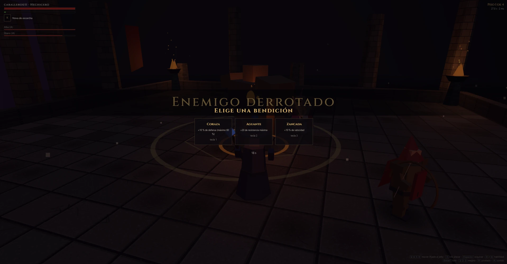
Al vencer al jefe, cada jugador elige una de tres bendiciones antes del siguiente piso.
Arquitectura desplegada en AWS
2. Práctica 3.1 — Cómputo para IA: entrenar y servir el bot
En lugar de CartPole, el entorno de Gymnasium (ia/entorno_duelo.py) es un caballero contra el Guardián de Hierro,
usando la lógica real del servidor: 14 observaciones, 7 acciones y decisiones a 10 Hz. El entorno corre a 21 779 pasos/s.
El agente es PPO de Stable-Baselines3 (red 64-64). Equipo: Ryzen 5 7533HS (6 núcleos), sin GPU NVIDIA.
Entrenamiento (medido)
Configuración
Pasos
Tiempo
Pasos/s
1 entorno (PDF)
100 000
158.8 s
630
1 entorno, repetición
100 000
160.4 s
623
8 entornos
1 000 000
928.6 s
1 077
GPU T4 (Colab)
no medido
Calidad (50 combates, semillas fijas)
Jugador
Victorias
Azar
0 %
PPO 100 000 pasos
20 %
PPO 1 000 000 pasos
100 % (30.9 s)
Bot de reglas, reflejos perfectos
100 % (53.4 s)
Inferencia: 2 000 bots a 10 Hz (20 000 decisiones/s)
Forma de servir
Latencia
vCPU (+30 %)
PyTorch (SB3)
0.429 ms
12
Red exportada a numpy
0.0155 ms
1
Las 1 000 decisiones de prueba salieron idénticas en las dos versiones, y numpy es ~28 veces más rápido: en una red tan
pequeña pesa más el costo fijo de llamar a PyTorch que el cálculo. El servidor usa la versión numpy.
Costo en AWS (precios oficiales, us-east-2)
Uso
Instancia
USD/h
Spot
Inferencia PyTorch
c7i.4xlarge
0.714
0.18–0.23
Inferencia numpy
c7i.large
0.089
0.020–0.029
Entrenamiento GPU
g4dn.xlarge (T4)
0.526
0.27–0.28
Servir 2 000 bots cuesta USD 521/mes con PyTorch contra 65 con numpy. En la práctica, con numpy caben en los nodos de
juego que ya existen. El entrenamiento va en Spot, porque si AWS reclama la máquina se reanuda desde el último
checkpoint. La inferencia va bajo demanda, junto a las partidas, porque no puede cortarse.
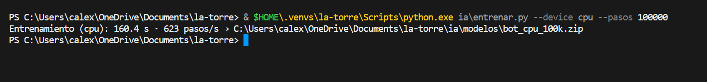
3.1-01 · Entrenamiento de 100 000 pasos en CPU: 160.4 s.
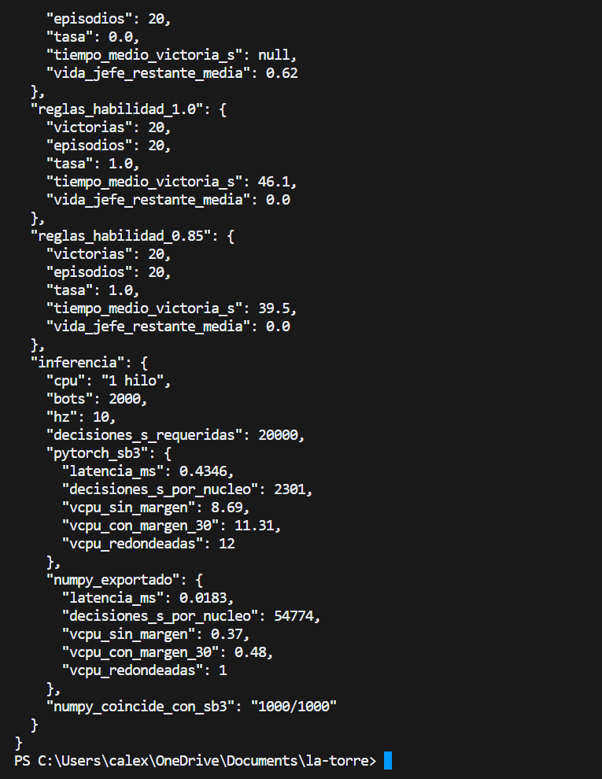
3.1-02 · medir.py: victorias, latencia de inferencia y vCPU necesarias.
3. Práctica 3.3 — Contenedores y orquestación con Agones
Contenedor:server/Dockerfile con Python 3.11 slim, usuario sin privilegios y puertos 7654 (juego) y 9100 (métricas).
La imagen pesa 46.1 MB en ECR. En el contenedor Linux, el tick medio fue de 0.50 ms (2 901 ticks), el 1 % del presupuesto de 50 ms.
SDK de Agones: el servidor avisa Ready al arrancar, manda Health en segundo plano, se marca Allocated cuando
entra el primer jugador y pide Shutdown al terminar la run. Así cada GameServer vive exactamente una partida.
Flotas:k8s/fleet-torre.yaml (3 réplicas, 250m de CPU y 128 MiB por servidor) y fleet-jefedia.yaml.
Los FleetAutoscaler tienen un buffer del 20 %.
3.3-01 · El servidor en un contenedor local (Agones: no).
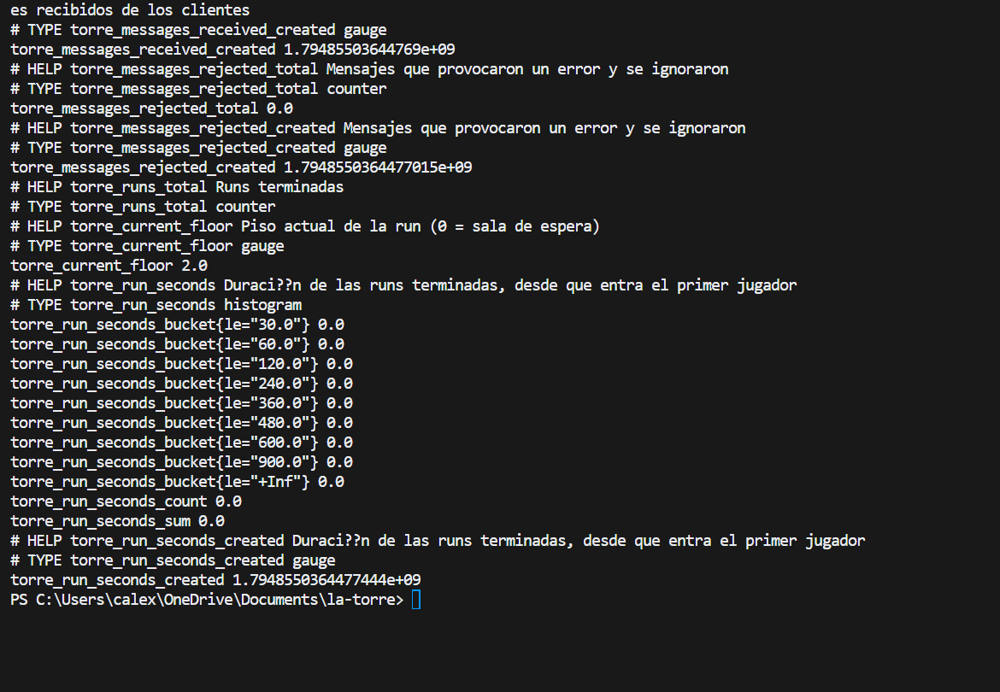
3.3-02 · Métricas torre_* expuestas para Prometheus.
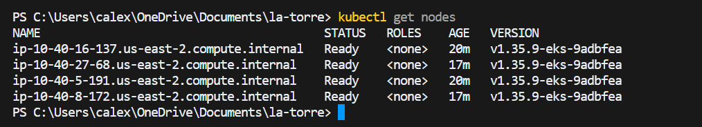
3.3-03 · Nodos de EKS 1.35 listos.
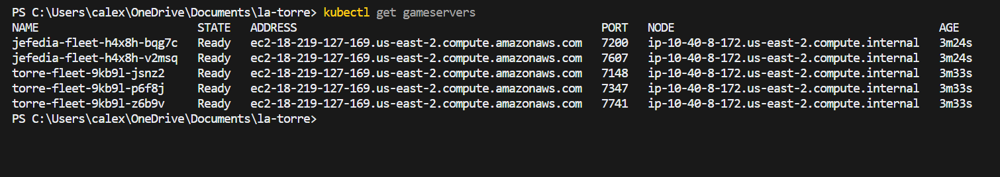
3.3-04 · 5 GameServers en Ready (3 de torre-fleet y 2 de jefedia-fleet).3.3-05 · Tras GameServerAllocation, uno pasa a Allocated. Con 3 réplicas, el 20 % pide 1 libre y quedan 2: la flota no crece.3.3-06 · Al borrar el pod asignado, Agones lo marca Unhealthy y crea otro servidor Ready en ~30 s. La partida perdida no se "revive".3.3-07 · Imagen en ECR con las etiquetas 1.5 y 67dd006 (SHA del commit).
4. Práctica 3.2 — CI/CD: del repositorio a la flota
Pipeline (.github/workflows/ci.yml), en cada push y pull request: 122 pruebas del servidor, 9 de la Lambda, validación de
los YAML de Kubernetes y terraform fmt/validate. Después construye la imagen con la etiqueta = SHA del commit, que nunca se sobrescribe.
Limitación de la cuenta: la cuenta de AWS del plan gratuito pertenece a una organización cuya política (SCP) prohíbe
iam:CreateOpenIDConnectProvider. Por eso no se pudo crear el rol OIDC para que GitHub publique en ECR sin llaves. No usé
llaves de larga duración en GitHub, que es justo lo que el material recomienda evitar. La publicación en ECR y la actualización de la flota se
hicieron con los mismos pasos del pipeline desde la terminal. El código queda listo con -var=crear_oidc_github=true para una
cuenta sin esa restricción.
Despliegue sin cortar partidas (medido 20:56 UTC)
Primero asigné un servidor para simular una partida en curso. Luego apliqué la flota con la imagen :4f65218. 50 s después:
GameServer
Estado
Imagen
torre-fleet-9kb9l-qrpwr
Allocated
torre-server:67dd006 (anterior: la partida sigue)
torre-fleet-l4nlg-7ph6v / -bbfkn
Ready
torre-server:4f65218 (nueva)
Rollback: como cada imagen lleva su SHA y ECR guarda las anteriores, volver atrás es aplicar la flota con la etiqueta buena
(:67dd006). Agones reemplaza solo los servidores libres y las partidas en curso terminan con su versión. No hay que reconstruir nada.
3.2-01 · Pipeline en verde con los dos trabajos.3.2-03 · Actualización gradual: la partida asignada conserva su imagen.
5. Práctica 3.4 — Autoescalado y pruebas de carga
Montaje: kube-prometheus-stack con Grafana (tablero grafana/tablero-torre.json), PodMonitor del juego cada 5 s y
ServiceMonitor de Agones. Locust corrió como pod dentro del clúster, en la misma región, con 1.5 vCPU reservadas. Pedía servidores a
la API de Kubernetes con una cuenta de servicio que solo puede crear GameServerAllocation. Cada jugador simulado juega runs
completas con la estrategia de los bots y mide el RTT con un ping por segundo.
120jugadores simulados (rampa de 18 min, grupos de 3)
6 msRTT p99 (73 537 pings, 0 fallos)
2.2 mstick p99 máximo (meta < 25 ms)
208 sreacción: pod pendiente → nodo nuevo listo
Capa de autoescalado
Qué pasó (medido)
Agones FleetAutoscaler
GameServers de 5 a 54. Los Allocated siguen a los jugadores (≈ 1 por grupo de 3).
Cluster Autoscaler
Nodos de 4 a 8 (tope): +1 a los 288 s, 366 s, 458 s y 540 s.
Límite
Con 8 nodos se llegó a 35–39 Allocated (~105–117 jugadores); después hubo hasta 10 pods pendientes y asignaciones sin
servidor libre. Lo que se agotó fue la CPU reservada (250m por servidor), no el servidor del juego.
Capacidad por nodo
Medida: ~13–15 jugadores por nodo (105–117 en 8 nodos que también corrían Agones, Prometheus y Locust).
Teórica con 250m: 7 servidores = 21 jugadores por nodo c7i-flex.large.
Recurso (últimos 5 min de la rampa)
Medido
CPU por GameServer
17.7 m (reservados 250 m)
Egress por jugador
119 kbps
Egress por espectador
57 kbps
Snapshots a 30 espectadores
51 039, 0 tardíos, cada 100 ms
Runs completas en la rampa
172 (65 victorias)
Como el RTT nunca se acercó a la meta de 80 ms, la capacidad no la marcó la latencia sino la reserva de CPU: con
250m por servidor caben ~7 servidores por nodo c7i-flex.large (~21 jugadores). Medido: ~105–117 jugadores en 8 nodos que también
corrían Agones, Prometheus y Locust.
Línea de tiempo del autoescalado (registrar_escalado.py, cada ~11 s).
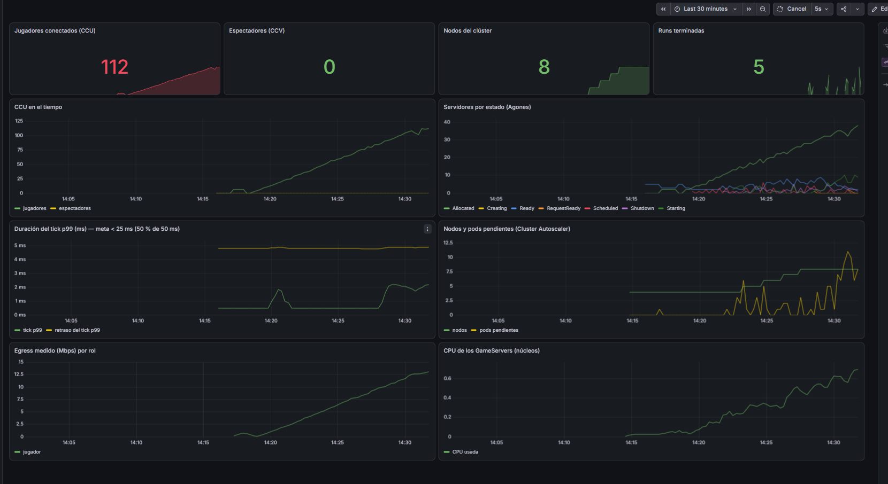
3.4-01 · Tablero en Grafana durante la rampa: 112 jugadores, servidores Allocated subiendo, nodos 4→8, tick p99 ~2 ms y egress de ~13 Mbps.
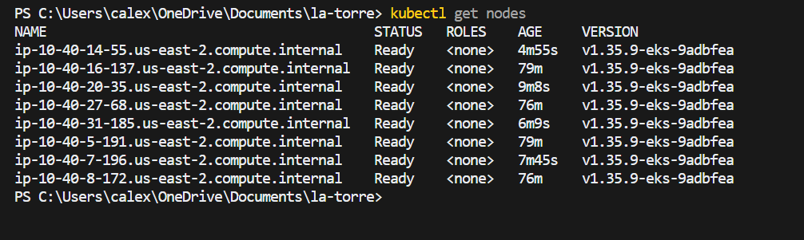
3.4-03 · 4 nodos nuevos de 4–9 minutos de edad, creados por el Cluster Autoscaler.3.4-02 · Resumen de Locust de la rampa.
CCU contra latencia p95 (fila agregada de Locust). El pico inicial son las primeras asignaciones de servidor (300–500 ms) cuando aún había pocos pings. Después, el p95 se queda en 1–4 ms hasta 120 jugadores: nunca cruza la meta de 80 ms.
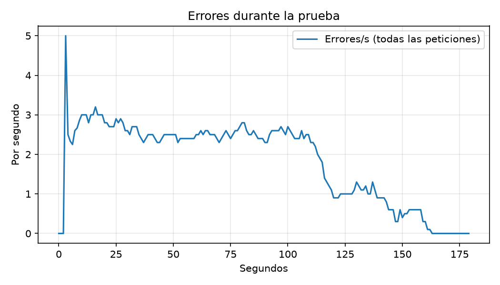
Errores por segundo en el pico (30 jugadores + 30 espectadores). Son asignaciones que no encontraron servidor libre mientras la flota creaba más. Los espectadores tuvieron 0 snapshots tardíos.
Recomendación de configuración (con base en los datos)
Parámetro
Usado
Recomendado
Por qué (dato medido)
Reserva de CPU por GameServer
250 m
50 m
El consumo real fue 17.7 m; la reserva fue lo que llenó los nodos.
bufferSize
20 %
30 % (y minReplicas ≥ 10 en eventos)
Con 20 % se agotaron los servidores libres en la rampa y en el pico (asignaciones fallidas); un nodo tarda ~3.5 min.
Tipo de máquina
c7i-flex.large
c7i-flex.large
El tick p99 fue ≤ 2.2 ms: la CPU sobra. Con 50 m el límite pasa a ser el de 29 pods por nodo, y una máquina más grande solo aumentaría ese tope.
Mínimo de nodos
2
2 normal; pre-escalar 15 min antes de un lanzamiento
Fuera de los eventos, 2 nodos bastan y cuidan el costo. La reacción de ~3.5 min por nodo no alcanza a cubrir un pico repentino.
Lo que no salió perfecto: 302 veces un jugador simulado pasó más de 5 s sin recibir estado, casi siempre al cerrarse
la run; la causa no se confirmó. El primer intento de pico con espectadores no sirvió (los espectadores quedaron en otro proceso de Locust)
y lo repetí con 60 usuarios. Con --processes, Locust no guarda el historial del RTT por separado; la curva CCU-p95 automática
mezcla el RTT con las asignaciones (300–500 ms). Por eso reporto el RTT con el resumen final. La escala (120 jugadores y 30 espectadores)
la limitó el tope de 8 nodos que fijé para cuidar el presupuesto.
6. Práctica 3.5 — Serverless: tabla de líderes
Lambda python3.12 (256 MB) con Function URL pública y DynamoDB bajo demanda, todo creado con Terraform. El servidor del juego
manda POST /resultado al terminar cada run y los clientes consultan el top por sala (solo, bots, grupo).
Hallazgo: la URL respondía 403 porque una Function URL pública necesita dos permisos
(lambda:InvokeFunctionUrl e InvokeFunction). La consola los agrega sola, pero Terraform no.
Prueba de carga 80/20 con 500 usuarios (5 min, 19:44–19:49 UTC)
Peticiones
Rechazadas (429)
p50
p95
p99
GET top (80 %)
106 666
80.2 %
71 ms
150 ms
360 ms
POST resultado (20 %)
26 703
80.3 %
71 ms
130 ms
350 ms
Instancias concurrentes: 10 todo el tiempo. Es el límite de concurrencia de las cuentas nuevas (lo normal es 1 000).
Lambda atendió ~85 peticiones/s y rechazó el resto con 429. Conclusión: "serverless escala solo" tiene un tope de cuenta, y hay que pedir el aumento antes de un lanzamiento.
Arranque en frío: 10 en toda la prueba (uno por instancia), de ~93 ms. No explica la cola de 2–5 s, que viene de la saturación.
Las escrituras usaron 200 jugadores fijos. Si cada escritura creara un jugador nuevo, cada consulta del top recorrería una tabla cada vez más grande
(≈ USD 2 contra ≈ USD 0.35 estimados para esta prueba).
Costo mensual con 1 millón de peticiones (precios oficiales)
USD/mes
Lambda + DynamoDB (serverless)
≈ 1.33
VM t3.micro encendida todo el mes (+ IPv4 + 8 GB)
≈ 11.88
VM t3.small encendida todo el mes
≈ 19.47
Serverless sale más barato hasta unos 9 millones de peticiones al mes, y sin jugadores cuesta casi cero. El servidor de partida, en cambio,
no puede ser serverless: guarda la partida en memoria y mantiene conexiones largas.
3.5-02 · CloudWatch: ConcurrentExecutions plano en 10 y 22 022 rechazos (Throttles) por minuto.3.5-03 · Resumen de Locust de la prueba 80/20.3.5-01 · POST a la Function URL.
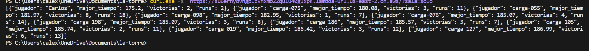
3.5-01 · GET del top: el resultado registrado aparece primero.
7. Práctica 3.6 — Infraestructura como código con Terraform
infra/ describe todo: VPC sin NAT, EKS 1.35 con su grupo de nodos, Agones y Cluster Autoscaler (Helm desde Terraform), ECR, Lambda,
URL, DynamoDB, roles, alerta de presupuesto de USD 10 y la regla del webhook. El estado vive en S3 con bloqueo
(use_lockfile) y los cambios se revisaron en un pull request con el plan y su costo antes del apply.
Problema encontrado al aplicar
Arreglo en el código
EKS 1.32 por defecto habría entrado a soporte extendido (+USD 0.50/h)
EKS 1.35 (Agones 1.62 soporta 1.34–1.36)
El plan gratuito rechazó c7i.large ("not eligible for Free Tier")
Nodos c7i-flex.large (USD 0.08479/h)
La SCP prohíbe crear proveedores OIDC (IRSA y GitHub)
Política del autoescalador en el rol de los nodos, limitada al clúster; OIDC de GitHub opcional
El chart de Agones creaba 2 Classic ELB que cobran y que el destroy no borraría
Allocator en ClusterIP y ping desactivado
Crear la Fleet fallaba: el plano de control no llegaba al webhook de Agones
Regla de seguridad TCP 8081 solo desde el plano de control
La alerta del presupuesto descontaba los créditos (nunca avisaría)
include_credit = false
El destroy se trabó: los finalizers de Agones agotaron el tiempo
Desinstalar Agones antes del destroy (documentado en infra/README.md)
Después de los arreglos, terraform plan respondió "No changes" (sin drift). El destroy terminó con
"Destroy complete! Resources: 38 destroyed" (la primera corrida ya había borrado el resto). scripts/comprobar-huerfanos.ps1 confirmó que
no quedó nada. Solo se conserva el bucket S3 del estado.
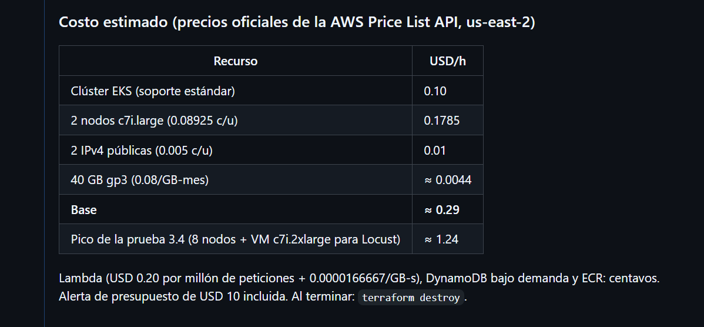
3.6-01 · Pull request con el plan y el costo por hora, estimado aún con c7i.large antes de cambiar a c7i-flex.large (casi el mismo precio).3.6-02 · Plan sin cambios y salidas de Terraform.3.6-04 · Destroy completo.3.6-05 · Sin recursos huérfanos.
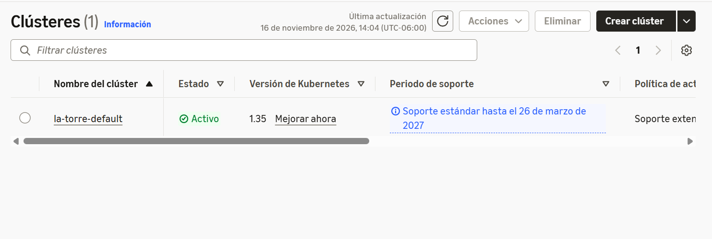
3.6-03 · Clúster activo en la consola, en soporte estándar hasta marzo de 2027.Alerta de presupuesto de USD 10, creada con Terraform en el mismo apply que la infraestructura.
8. Capacidad, costos y recomendaciones
Costo por hora y por jugador (precios oficiales de us-east-2)
Escenario
Cómputo USD/h
Egress USD/h
USD por jugador-hora
Medido: 120 jugadores en 8 nodos + EKS + IPv4
0.82
0.58
≈ 0.0117
Proyección 20 000 jugadores, reserva actual (≈ 953 nodos)
≈ 86
54–96
≈ 0.007–0.009
Proyección 20 000 jugadores, reserva ajustada a 50 m (≈ 267 nodos)
≈ 24
54–96
≈ 0.004–0.006
Egress = jugadores × 119 kbps (1 071 GB/h para 20 000) × USD 0.05–0.09/GB según el tramo; para los 120 jugadores medidos, 0.0536 GB/h por jugador × 0.09.
La proyección supone que el consumo por servidor y por jugador crece en línea recta. Gasto estimado del día (≈ 2.7 h de clúster con 2–8 nodos,
Lambda y DynamoDB): ≈ USD 1.5–2.5, cubierto por los créditos. El dato real se revisa en Cost Explorer en 24 h.
Recomendaciones (con base en lo medido)
Ajustar la reserva de CPU de los GameServers de 250 m a ~50 m. El consumo real es de 18 m, así que la reserva actual desperdicia ~14 veces
la capacidad y es lo que detuvo la prueba en 105 jugadores. Así se pasa de ~7 a ~25 servidores por nodo (tope de pods del CNI).
El egress se vuelve el costo dominante una vez ajustado el cómputo: enviar deltas en lugar del estado completo, comprimir los snapshots
y, para espectadores masivos, retransmitir por CDN.
Colchón ante picos: un nodo tarda ~3.5 min en llegar. Para lanzamientos o eventos conviene subir el buffer del FleetAutoscaler o dejar
nodos de reserva; el 20 % se agotó durante la rampa.
Pedir los aumentos de cuota antes del lanzamiento: la concurrencia de Lambda (10 → 1 000) y las vCPU de EC2.
La IA cabe en el presupuesto: exportada a numpy, servir 2 000 bots cuesta 1 vCPU. El entrenamiento va en Spot.
Pendiente para la entrega del proyecto integrador (19 de noviembre)
El proyecto integrador pide la prueba de 1 000 jugadores y 500 espectadores. Hoy se llegó a 120 y 30 por el tope de 8 nodos. Con la reserva
ajustada y un tope mayor (dentro de la cuota de 32 vCPU), la misma infraestructura puede repetir la prueba a mayor escala.
Medir el entrenamiento en GPU (Colab T4) y confirmar el costo real del día en Cost Explorer.
Investigar los 302 casos sin estado por más de 5 s al cerrar la run.